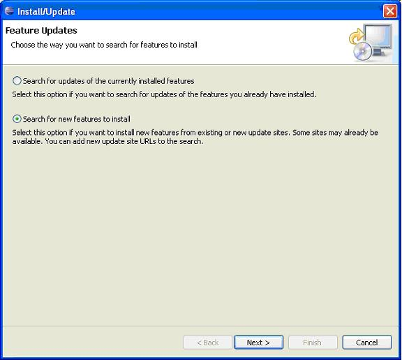
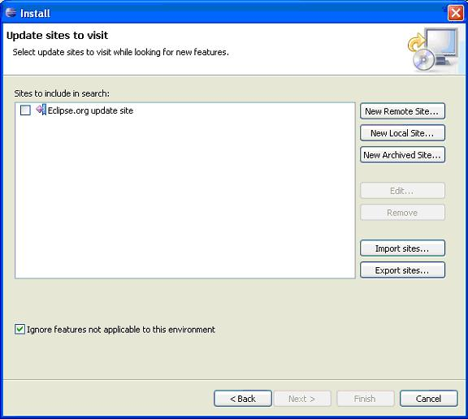
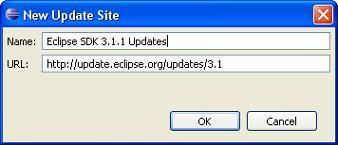
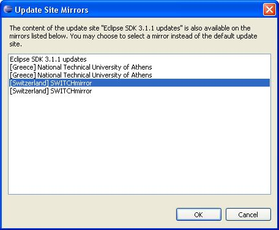

To upgrade from 3.1 to 3.1.1 using update manager, you must manually specify a new update site.1 These instructions describe how to update from 3.1 to 3.1.1 only. These instructions should not be used to upgrade from a 3.0.x build to 3.1 or 3.1.1.
In Eclipse 3.1, select
Help --> Software Updates --> Find and Install --> Search for New features to Install

Select New Remote Site.

In the New Update Site dialog, enter Name: Eclipse SDK 3.1.1 Updates and URL: http://update.eclipse.org/updates/3.1
Select OK.
Ensure that only Eclipse 3.1.1 SDK updates check box is selected and press Finish.
A list of mirrors will appear that have the 3.1.1 updates. Select a mirror that is geographically suitable for you and select OK

The update process should now proceed as usual.